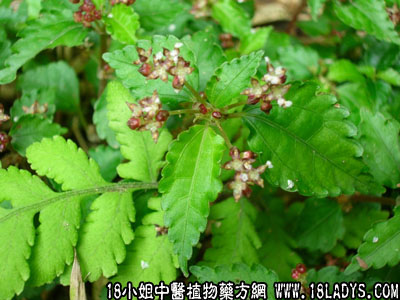

别名：接骨草、小驳骨丹。
植物名：裹篱樵。
生长环境：本品为灌木。栽培植物，种于村庄旁，有时植作绿篱，或在村边变为野生植物。
分布：我国南部地区。
入药部分：枝、叶。
采集期：夏、秋。
自采地点：家种。
性味：性平、味淡。
功能：散瘀。
主治、用量和用法：跌打：用干枝叶1至2两，煎水冲酒服，或干叶为末，加酒煮热外敷。
（方歌）跌打散瘀小还魂，干叶干枝二两匀，水煎酒冲适量服，煮末和敷效更宏。
参考资料：《广州常用草药验方集解》内载：治疗跌打经验方：大还魂、凤凰鸡、田基黄、小还魂、过江龙、金锁匙、大罗伞、山白芷、小罗伞、续断、毕拔、千打捶、威灵仙、驳骨消、打不死、满山香、扁柏、黑老虎、五加皮、香加皮、入地金牛、山枝子、马尾莲、石射香、土鳖、贼仔叶、石辣、桂枝、各药等量，共为细末，用滚水开，热敷伤处，每日换药一次，有吊瘀、接骨作用。